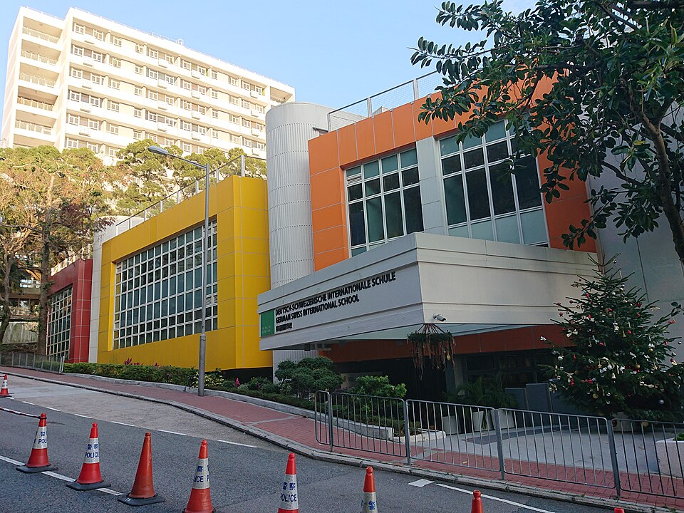

저먼 스위스 국제학교 피크 캠퍼스 · 사진: Ceeseven / Wikimedia Commons, CC BY-SA 4.0
저먼 스위스 국제학교(German Swiss International School, 홍콩 GSIS) — 영어·독일어 두 스트림, 한국 학생의 IGCSE·IB 준비법
1. 저먼 스위스 국제학교는 어떤 학교인가
GSIS는 1969년 독일어·영어 이중 교육을 원하던 독일·스위스 가정들이 세운 것으로 알려진 홍콩의 국제학교입니다.
· 두 스트림 — 영어 스트림(English International Stream)은 IGCSE를 거쳐 IB 디플로마로, 독일어 스트림(German International Stream)은 독일 국제 아비투어(DIA)로 이어지는 구조로 알려져 있습니다.
· 캠퍼스 — 홍콩섬 더 피크(길퍼드 로드)와 폭푸람에 캠퍼스가 있는 것으로 알려져 있습니다.
· 주의 — 한국의 경기수원외국인학교도 약칭이 GSIS입니다. 검색·서류에서 혼동하지 마세요.
| 구분 | 영어 스트림 | 독일어 스트림 |
|---|---|---|
| 수업 언어 | 영어 | 독일어 중심(이중언어) |
| 중등 후반 | IGCSE 과목 시험 | 독일 교육과정 |
| 졸업 자격 | IB 디플로마 | 독일 국제 아비투어(DIA) |
| 대학 방향 | IB 디플로마로 여러 나라 대학에 지원 | 독일식 졸업 자격(아비투어) 기반 |
| 한국 학생 | 독일어를 안 하면 이 경로가 현실적 | 독일어 수업을 따라갈 수 있어야 함 |
※ 스트림별 지원 자격·언어 요건·모집 일정은 학교 요강을 직접 확인하세요. 독일식 아비투어가 궁금하다면 서울의 서울독일학교(DSSI) 가이드도 참고가 됩니다.
2. 한국(주재원) 학생이 겪는 어려움
· IGCSE와 IB가 연달아 온다. 영어 스트림은 중등 후반 IGCSE 과목 시험을 치르고 곧바로 IB 디플로마로 넘어갑니다. 쉬어 갈 틈 없이 외부 시험 → 과목 설계 → IA·EE로 이어지는 흐름입니다.
· IGCSE 과목 선택이 IB로 이어진다. IGCSE에서 과학·수학을 어떤 수준으로 들었는지가 IB HL·SL 선택에 영향을 줍니다.
· 영국식 시험 문장. IGCSE 문제는 “state·describe·explain”처럼 지시어에 맞춘 답 길이를 요구해, 아는 내용도 답을 짧게 쓰거나 너무 길게 써서 점수를 놓칩니다.
· 다국어 환경. 독일어가 오가는 학교 분위기에서, 제2외국어 수업까지 챙기려면 시간 관리가 필요합니다.
3. 그래서 이렇게 준비합니다
🧭 IGCSE 전 — 과목을 IB까지 보고 고르기
목표 대학 방향을 먼저 적고, IB에서 들고 싶은 HL 과목을 떠올린 뒤 거꾸로 IGCSE 과목을 정합니다. 이공계라면 수학·과학을 가볍게 넘기지 않는 것이 첫 단계입니다. (→ IGCSE 과목 선택 가이드 · IB DP 점수 완전정복)
📖 영어과외 — 지시어별 답안과 분석 에세이
IGCSE 영어는 지시어별 답안 길이·구조를 훈련하고, IB로 넘어가기 전에 작품 분석 에세이(작가의 선택 → 효과 → 근거 인용) 틀을 잡아 둡니다. (→ 국제학교 영어 공부법)
📐 수학과외 — 영어 용어·풀이 과정·계산기
IGCSE 수학은 풀이 과정 점수(method marks)가 있어 과정을 남기는 습관이 중요합니다. 알지브라·함수 용어를 영어로 정리하고, IB Math AA·AI 중 어느 쪽으로 갈지 G10 무렵 미리 판단합니다. (→ IB 수학 AA·AI 선택 · 알지브라 공부법)
4. 홍콩의 강점 — 시차 1시간 화상과외
홍콩은 한국보다 1시간 늦어 방과 후 저녁에 실시간 화상 1:1을 하기 좋습니다. IGCSE 시험 시즌과 IB 과제 마감이 몰리는 시기에 맞춰 기출 풀이·에세이 초안 점검 횟수를 조절하면 효율적입니다. 홍콩 전반의 과외·학원 이야기는 홍콩 국제학교 과외와 홍콩 학원 고르기에 정리했습니다.
정리
저먼 스위스 국제학교(GSIS)는 1969년 개교로 알려진 홍콩의 이중 스트림 학교로, 영어 스트림은 IGCSE → IB 디플로마, 독일어 스트림은 독일 국제 아비투어로 이어집니다. ① IB까지 보고 IGCSE 과목 설계 ② 영어는 지시어별 답안·분석 에세이 ③ 수학은 풀이 과정과 AA·AI 판단 — 이 셋을 시차 1시간 화상과외로 관리하는 것이 핵심입니다. 30분 무료 상담으로 우리 아이 단계부터 점검해 보세요.